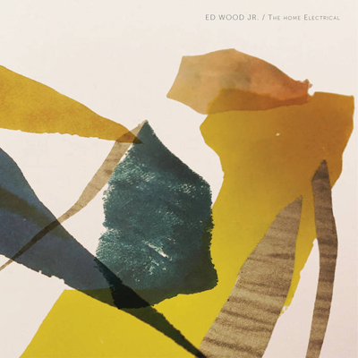
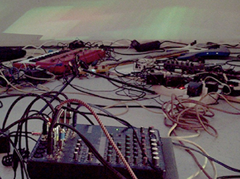

RECENT ACTIVITIES :
* "Limited Sky Satellarium III" A/V installation + performance as ephemeraltomorrow for Draussen Stadt at Nirgendwo Berlin Germany September 2021 *

* "[Hu|Au]Bacus" A/V installation for Wuest Halle, Germany September 2021 *
* "Epiphytes" A/V installation as ephemeraltomorrow for Wilde Möhre Brandenburg Germany July-August 2021 *
* "Unauthorized Sunset" youtube live concert for Fitzroy Berlin, Germany June 2021 *
* "Solaris" A/V installation as ephemeraltomorrow for a new media art group exhibition "DYSTOPISCHE IDYLLE" at Atelierhaus Mengerzeile & Kunstraum m3 Berlin Germany May 2021 *
* "Teich aus Träumen" and "Nachts im Park" Bandcamp single release by Unauthorized Sunset May 2021 *
* "The moment i say i’m here now is not now anymore" [part I], [part II]" Sound composition for short films by María SG Berlin Germany October 2020 *
* “Seeds of Life #3, #4 " Sound compositions for Fashion show and video sculpture installations by Katja Loher at The Middle House Hotel Shanghai, The Temple House Chengdu, China Sep - Nov 2019 *
* "Speculum GW170817" Data genalated 3ch-directional-audio/visual installation as ephemeraltomorrow at Madatac X, Madrid - February, Spain and Spain and Finalist at NTU Global Digital Art Prize, Singapore - October 2019 *

* “Bee Manifest” Sound composition of a performance and headphons sound installation for bee pavilion by Katja Loher at Nou Le Morene festival, Mauritius August 2019 *
* "Montagne video 9'" Sound compositions for Cinematography video installation by Julie Rocheau in a group exhibition diplômé.e.s 2018 du Master Photographie et Art Contemporain de l’Université Paris 8 "L'infini n'a lieu qu'une fois" at Mains d'Œuvres, Saint-Ouen(Paris), France April 2019 *
* Sound compositions for Dance performance at "Where Does The Rainbow End?" video
installations by Katja Loher, Private opening of Art and Architecture Project at the new headquarter building of Swissgrid, Aarau, Switzerland September 2018 *
* Data genalated 3ch-directional-audio/visual installation "Speculum GW170817" as ephemeraltomorrow
at 48 Stunden Neukölln - "Neue Echtheit", Berlin, Germany 23 - 25 June 2018 *
* "Satellarium II" as ephemeraltomorrow was selected for 21st Art division Julie's selection of
Japan Media Arts Festival June 2018 *
* Realtime Data genalated quadraphonic-audio/visual installation "Satellarium II" as ephemeraltomorrow
at Athens Digital Art Festival - Singularity Now Athens, Greece 23 - 28 Mai 2018 *
* 7.1-sorround-audio/OLED interactive permanent installation "Light Cloud" with Tamschick Media+Space
at Merck Innovation Center Darmstadt, Germany April 2018 (Extracted video and sounds)*
German Design Award 2019 Special Winner + *Red Dot Award 2018 Winner
* Sound compositions for "Will the doves nestle on the moon?"
video installations by Katja Loher, Art Fair at Embassy of Switzerland New Delhi, India. February 2018 *
* Realtime audio/visual installation with 5.1 sorround sound, "Satellarium II" as ephemeraltomorrow at a group show by artburst - thank you for shareling, during the Artweek Berlin, Germany 8 September - 1 October 2017 *
* Sound compositions for "Videocells?", "Videonests?" and "Drum" video installations by Katja Loher, exhibition at Anya Tish Gallery Huston TX September - October and art miami Miami FL, U.S.A. December 2017 *
* Realtime audio/visual installation, "Satellarium" as ephemeraltomorrow at Blindsignal #3 Berlin, Germany September 2017 *
* Realtime audio/visual installation with 5.1 sorround sound, "Satellarium II" as ephemeraltomorrow at 48 Stunden NeuköllnKunstwerkstatt Sommer, Berlin, Germany 23 - 25 June 2017 *
* Sound compositions for "Bee Manifesto" videos by Katja Loher, exhibition at C-24 Gallery New York, U.S.A. May 2017 *
* Realtime audio/visual installation, "Satellarium" as ephemeraltomorrow at VISIONARY ART SHOW Palazzo Vernazza Castromediano, Lecce, Italy 12 - 30 May 2017 *
* Featuring 2 vocal project, "k.o.w" and "Outer Space" for album "The Home Electral" by Ed Wood Jr Lille France *

* "Vuela Vuela" Sound composition for Katja Loher's exhibition at C-24 Gallery New York, U.S.A. November 2016 *
* "T.A.U.T" 4CH Sound Prodution for Friedrich Hensen with interactive audio, neon lights and video installation as ephemeraltomorrow & crews. Exhibited at BAUSCHULE '16 Stuttgart, Germany August 2016 *
* "Satellarium" Sound composition for interactive audio visual installation as ephemeraltomorrow.
Exhibited Nell'Arena delle balle di paglia festival at Cotignola, Italy July 2016 *
* "#Digital Agora" Sound composition for interactive audio visual installation as ephemeraltomorrow.
Exhibited at Audi Q2 #untaggable, Vienna, Austria June 2016 *
* Bubbles (verre soufflé et vidéo), Sound composition for Katja Loher's exhibition at Paris International digital week - Mi*Galerie Paris, France October 2015 *
* Cosmic Berry's concert at Mole Music Osaka,Japan September 17 2015 *
* Where Does Time Begin Sound composition for Katja Loher's exhibition at Anya Tish Gallery Huston, TX, USA September 2015 *
* 3 way view live video of Cosmic Berry's CosmicCube set "unattended" *
* Composition for compilation album for film CODE September 2015 *
* My Name is Gregor' video simulation15, Sound composition for interactive installation as ephemeraltomorrow June 20 *
* Concert : June 06 2015 Cont.Music at American Whilpools Berlin DE *

* Oasis Lounge Sound desgin for Katja Loher's exhibition Airport Bogota,CO December 2014 *
* Mengi, Reykjavík IS August 24th 2014 *

* Garden concert in afternoon at record shop 12 Tónar, Reykjavík IS August 24th 2014 *

* Sound design for Katja Loher 's video instalation "Video Portals"at C-24 Gallery, New York, June 2014 *
* Collabolation with Jessica Ekomane at Madame Claude, Berlin DE May 3rd 2014 *

* Appartment Concert with RÊVE Lunar society, Lille FR March 29th 2014 *

* Sound design for Katja Loher 's video exhibition
Video Planet Orchestra, January 25, 2014 - May 4, 2014 at Figge Art Museum, Davenport, Iowa
VOLTA NY 2014 March 6-9 2014 at C-24 Gallery, New York *

* In newly released Album by David Last this Feb contains something
I sang few years back in summer Tennessee, lyrics by Daniel Olshansky,
and seems that this collaboration is still extending to
visual form, tbc here's extract piece from the song 2014*
* December 15th 2013, Jam Concert with Silje Nes, Taxgorkhan,
Ana Bogner for Silje's 7" release party at Muscle Temple *

* song preview from new Cosmic Berry's live set *+.+* *
* October 12th 2013
Concert at Wrangelstraße 31a Kreuzberg, Berlin *

*Who Collects Clouds in the Sky? Sound composition for
Katja Loher's video sculpture. Exhibited at San Jose Museum of Art,
CA, Anya Tish Gallery, Houston, TX, USA September 2013*

* May 12 2013, 8-9:30pm
Conscert at Eglise Saint-Merri, 76 rue de la verrerie 75004 Paris*
* Cosmic Berry's first official release "Static Juice" from french label Laybell on February 4th
Including great remixes by Silje Nes, Black Light Smoke, LIFE&LIMB, GRIFON
and My Favourite Things January 2013*
* along with music video "Round & Low" by Flashbacker! *

* Featuring project for french Mathrock band from Lille Ed Wood Jr *

* Album of Tiger Fingers out from hfn *
* Hamburg label, hfn is releasing past project from Brooklyn,
Tiger Fingers, EP vinyl release for Little Drummer Girl
+ remixes by Jimmy Edgar and Night Plane *


* Interplanetary Constellations Sound design for Katja Loher's video
sculptures. Exhibited at MuBE. Museu Brasileiro da Escultura. São Paulo - Brasil *
* Live video of Cosmic Berry from Japan Tour,
Jun 30 Villa Kujoyama Kyoto *
* 2nd album of two.left.ears, " *divAAAtion*" has been released with Asako's voice samples.
Live dates are been scheduled also with featuring vocal of old and new songs *


* Cosmic Berry's bandcamp *


* 1st concert of Cosmic Berry was March 2012.
Benefit event for Japan MARAIS OUEST, Paris *